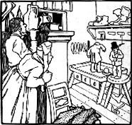
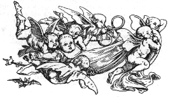

The Elves
by the Grimm Brothers
First Tale
A shoemaker, by no fault of his own, had become so poor that at last he had nothing left but leather for one pair of shoes. So in the evening, he cut out the shoes which he wished to begin to make the next morning, and as he had a good conscience, he lay down quietly in his bed, commended himself to God, and fell asleep.
In the morning, after he had said his prayers, and was just going to sit down to work, the two shoes stood quite finished on his table. He was astounded, and knew not what to think. He took the shoes in his hands to observe them closer, and they were so neatly made, with not one bad stitch in them, that it was just as if they were intended as a masterpiece. Before long, a buyer came in, and as the shoes pleased him so well, he paid more for them than was customary, and, with the money, the shoemaker was able to purchase leather for two pairs of shoes. He cut them out at night, and next morning was about to set to work with fresh courage, but he had no need to do so for, when he got up, they were already made, and buyers also were not wanting, who gave him money enough to buy leather for four pairs of shoes. Again the following morning he found the pairs made, and so it went on constantly, what he cut out in the evening was finished by the morning, so that he soon had his honest independence again, and at last became a wealthy man.
Now it befell that one evening not long before Christmas, when the man had been cutting out, he said to his wife, before going to bed, What think you if we were to stay up to-night to see who it is that lends us this helping hand?
The woman liked the idea, and lighted a candle, and then they hid themselves in a corner of the room, behind some clothes which were hanging up there, and watched. When it was midnight, two pretty little naked men came, sat down by the shoemaker's table, took all the work which was cut out before them and began to stitch, and sew, and hammer so skillfully and so quickly with their little fingers that the shoemaker could not avert his eyes for astonishment. They did not stop until all was done, and stood finished on the table, and they ran quickly away.
Next morning the woman said, The little men have made us rich, and we really must show that we are grateful for it. They run about so, and have nothing on, and must be cold. I'll tell you what I'll do, I will make them little shirts, and coats, and vests, and trousers, and knit both of them a pair of stockings, and you make them two little pairs of shoes.
The man said, I shall be very glad to do it.
And one night, when everything was ready, they laid their presents all together on the table instead of the cut-out work, and then concealed themselves to see how the little men would behave
At midnight they came bounding in, and wanted to get to work at once, but as they did not find any leather cut out, but only the pretty little articles of clothing, they were at first astonished, and then they showed intense delight.
They dressed themselves with the greatest rapidity, put on the beautiful clothes, and sang,

Now we are boys so fine to see,
Why should we longer cobblers be?
Then they danced and skipped and leapt over chairs and benches. At last they danced out of doors. From that time forth they came no more, but as long as the shoemaker lived all went well with him, and all his efforts prospered.
Second Tale
There was once a poor servant-girl who was industrious and cleanly and swept the house every day, and emptied her sweepings on the great heap in front of the door.
One morning when she was just going back to her work, she found a letter on this heap, and as she could not read, she put her broom in the corner, and took the letter to her employers, and behold it was an invitation from the elves, who asked the girl to hold a child for them at its christening. The girl did not know what to do, but, at length, after much persuasion, and as they told her that it was not right to refuse an invitation of this kind, she consented.
Then three elves came and conducted her to a hollow mountain, where the little folks lived. Everything there was small, but more elegant and beautiful than can be described. The baby's mother lay in a bed of black ebony ornamented with pearls, the covers were embroidered with gold, the cradle was of ivory, the bath-tub of gold. The girl stood as godmother, and then wanted to go home again, but the little elves urgently entreated her to stay three days with them. So she stayed, and passed the time in pleasure and gaiety, and the little folks did all they could to make her happy.
At last she set out on her way home. But first they filled her pockets quite full of money, and then they led her out of the mountain again. When she got home, she wanted to to begin her work, and took the broom, which was still standing in the corner, in her hand and began to sweep. Then some strangers came out of the house, who asked her who she was, and what business she had there. And she had not, as she thought, been three days with the little men in the mountains, but seven years, and in the meantime her former masters had died.
Third Tale
A certain mother had her child taken out of its cradle by the elves, and a changeling with a large head and staring eyes, which would do nothing but eat and drink, lay in its place.
In her trouble she went to her neighbor, and asked her advice. The neighbor said that she was to carry the changeling into the kitchen, set it down on the hearth, light a fire, and boil some water in two egg-shells, which would make the changeling laugh, and if he laughed, all would be over with him.
The woman did everything that her neighbor bade her. When she put the egg-shells with water on the fire, Goggle-eyes said, I am as old now as the Wester Forest, but never yet have I seen anyone boil anything in an egg-shell.
And he began to laugh at it. Whilst he was laughing, suddenly came a host of little elves, who brought the right child, set it down on the hearth, and took the changeling away with them.
